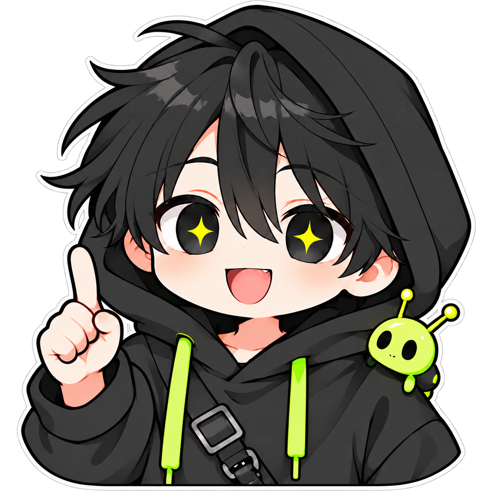

미마미 최종 시연 ↗
미마미 최종 시연 ↗16인 팀 · PD / 프로그래머 · Unreal Engine
01 / TEAM · 2024.08—12
미마미
제작 범위를 줄여
튜토리얼을 완성했습니다.
16인 팀에서 PD·프로그래머를 맡았습니다. AD·애니메이터와 잡몹과 애니메이션 수를 줄이기로 협의했고, 2주 만에 튜토리얼을 완성했습니다.
개인별 TODO 매일 확인 · 주 2회 회의 · 빌드 QA
자세히 보기 ↗KIM DOYOON / GAME DEVELOPMENT PM
게임 개발과 팀 일정 관리를 경험했습니다.
직접 만든 게임과 앱, 팀에서 맡았던 일을 소개합니다.

SELECTED WORK / 01—03
미마미 최종 시연 ↗16인 팀 · PD / 프로그래머 · Unreal Engine
01 / TEAM · 2024.08—12
미마미
16인 팀에서 PD·프로그래머를 맡았습니다. AD·애니메이터와 잡몹과 애니메이션 수를 줄이기로 협의했고, 2주 만에 튜토리얼을 완성했습니다.
개인별 TODO 매일 확인 · 주 2회 회의 · 빌드 QA
자세히 보기 ↗ 빛을 향해서 플레이 영상 ↗
빛을 향해서 플레이 영상 ↗3인 팀 · PD / 프로그래머 · Unity
02 / GAME JAM · 2024.07
빛을 향해서
3일 동안 핵심 기능을 만들고, 남은 2일은 연출을 다듬었습니다. 처음 세운 일정대로 완성해 청강대 × 유니티 게임잼 우수상을 받았습니다.
3인 팀 · 5일 개발 · 게임잼 우수상
자세히 보기 ↗ 러브 메모리 소개 영상 ↗
러브 메모리 소개 영상 ↗1인 개발 · 기획 / 디자인 / 개발 / 운영
03 / PRODUCT · 2026
러브 메모리
연인의 일정과 사진을 한 달력에 담았습니다. 기획부터 출시까지 직접 진행하고, 운영 중 알림 수신 문제를 수정했습니다.
기획·디자인·개발·운영 담당
자세히 보기 ↗HOW I WORK
미마미에서 AD·애니메이터와 잡몹과 애니메이션 수를 줄였습니다.
팀원이 작성한 TODO를 매일 확인하고 주 2회 회의를 진행했습니다.
빌드를 공유하고, 버그를 수정한 뒤 기획자와 다시 테스트했습니다.
AVAILABILITY
학기 중 3개월은 주 4일, 그 외에는 주 5일 근무 가능
2026년 11월 25일 전역 예정